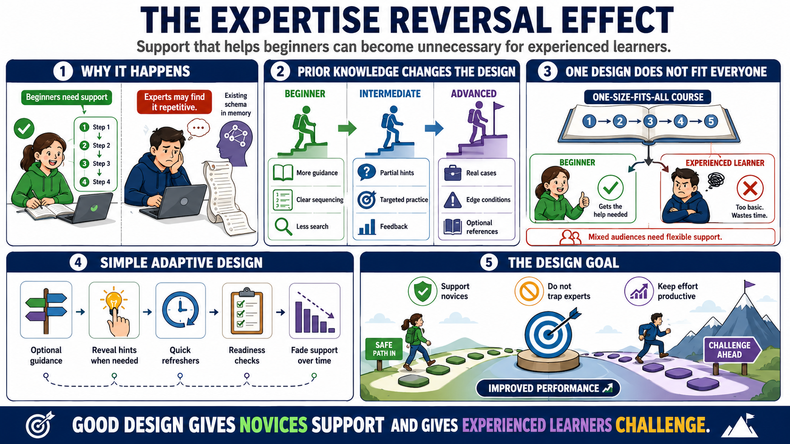

Expertise Reversal and Adaptive Design
Connecting to LMS... Progress: in progress

Narration
The expertise reversal effect describes a common instructional design problem: support that helps beginners may become unnecessary or inefficient for more advanced learners. A novice may need a worked example with step-by-step explanation. An experienced learner may find the same explanation slow, repetitive, or distracting because they already have the schema that the support is trying to build.
Prior knowledge changes the design need. Beginners benefit from more guidance, clearer sequencing, and reduced search. Intermediate learners may need partially faded examples, targeted practice, and feedback on judgment. Advanced learners may need realistic cases, edge conditions, and optional references rather than mandatory explanations of basics. One design does not serve every learner equally well forever.
Adaptive design can be simple. Offer optional guidance. Let learners reveal hints only when needed. Provide quick refreshers instead of forcing everyone through a long explanation. Use readiness checks to decide whether learners need more examples or more challenge. Build progression so support fades as competence grows. These choices respect both working memory limits and the learner's existing knowledge.
The goal is to support novices without trapping experienced learners in unnecessary detail. This matters in workplace learning, where audiences often include people with mixed experience. Good design gives beginners a safe path into the material and gives experienced learners a way to engage with the parts that actually stretch their performance. Adaptation keeps effort productive for more of the audience.